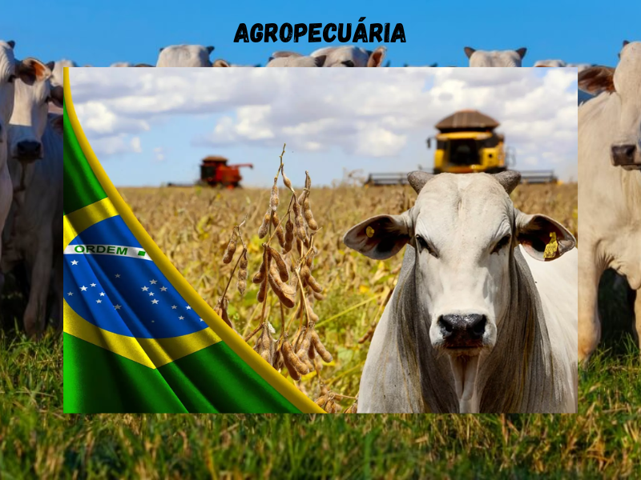

- localização
- times
- AGROPECUÁRIA
- AGROPECUÁRIA
AGROPECUÁRIA é a junção das atividades da agricultura e pecuária.Embora o tempo seja empregue em geral para definir o conjunto das atividades agrícolas,também
pode ser utilizado para explicar a complexa ligação entre estas duas.A atividade e AGROPECUÁRIA é exercida tanto em larga escala, quanto por pequenos produtores.